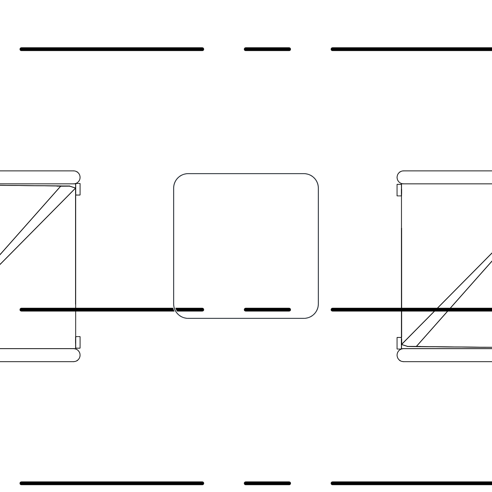
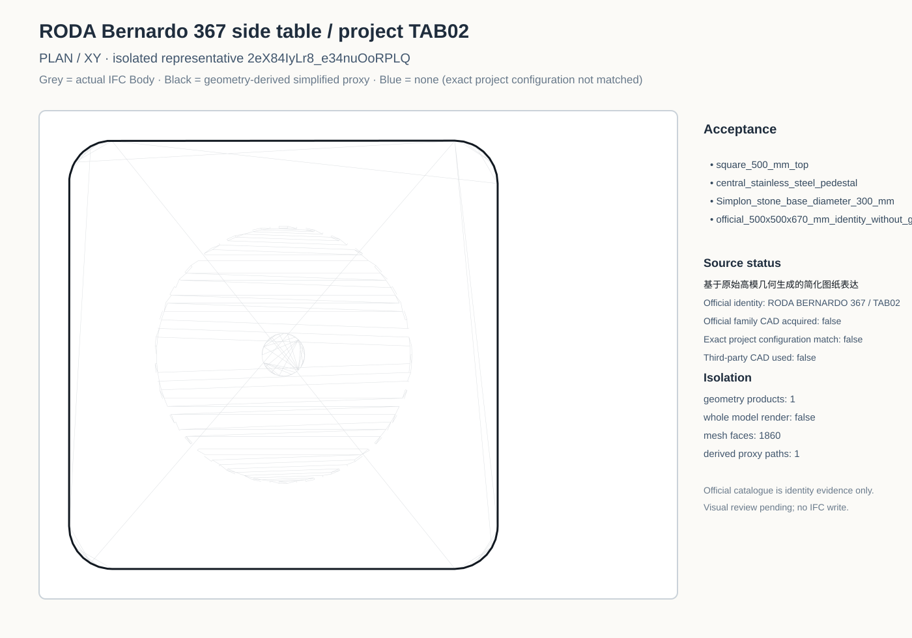
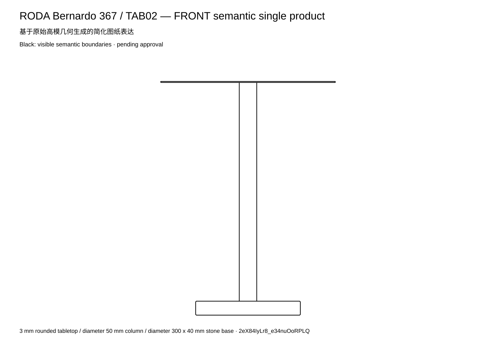
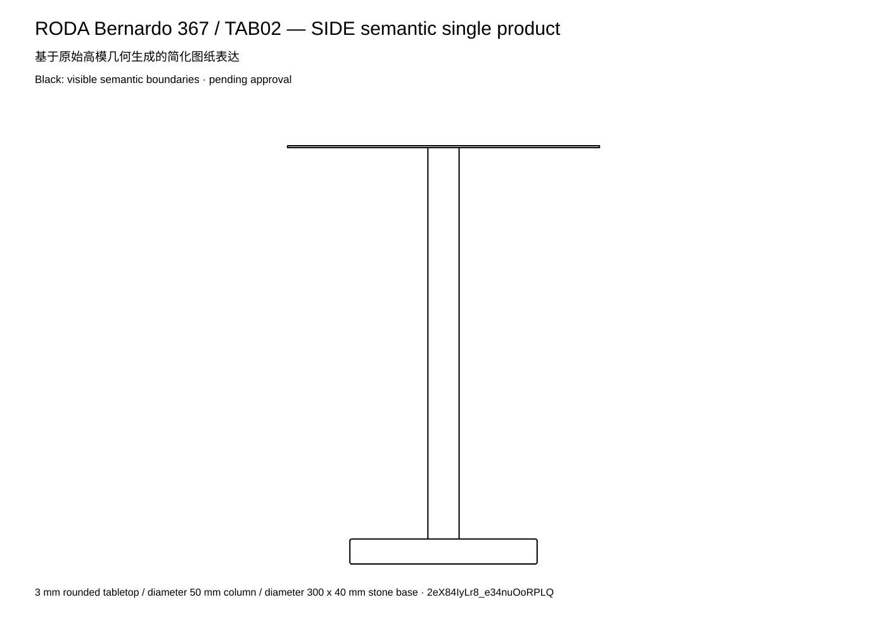
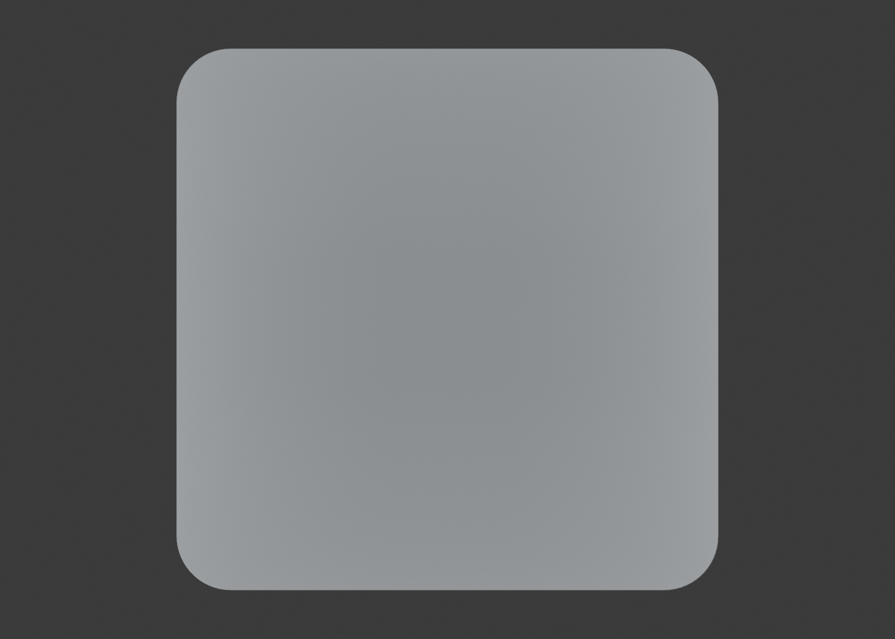
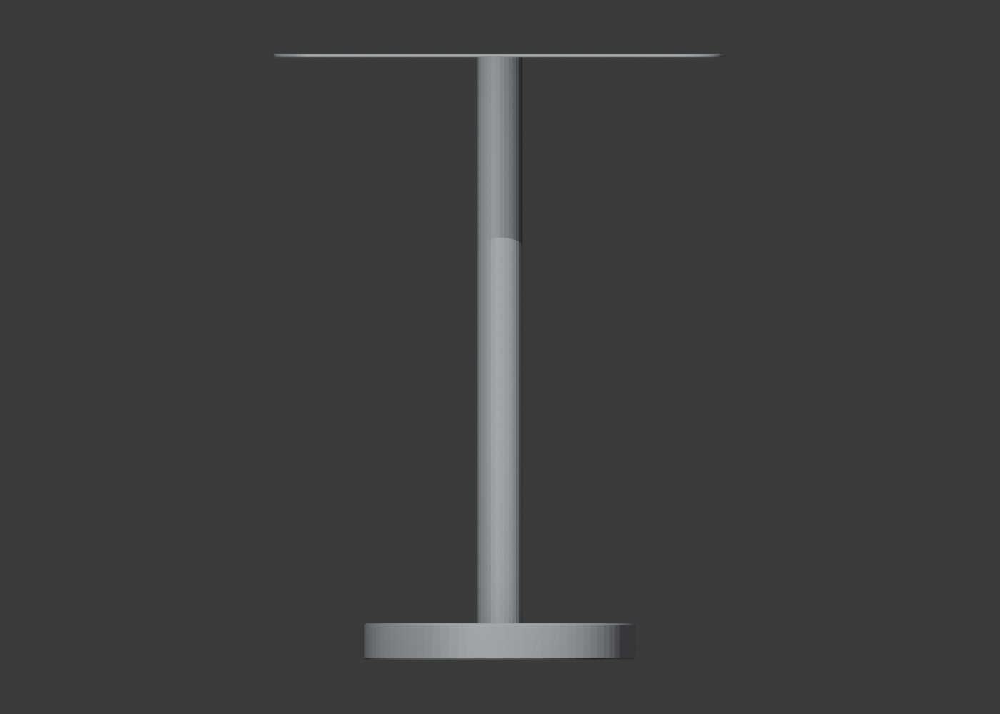
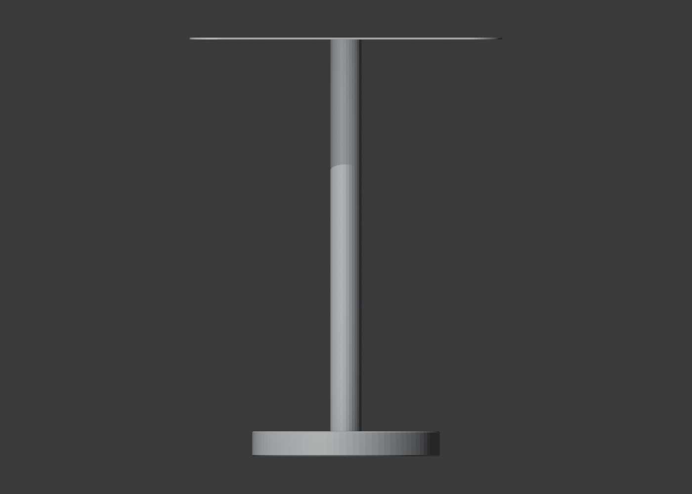
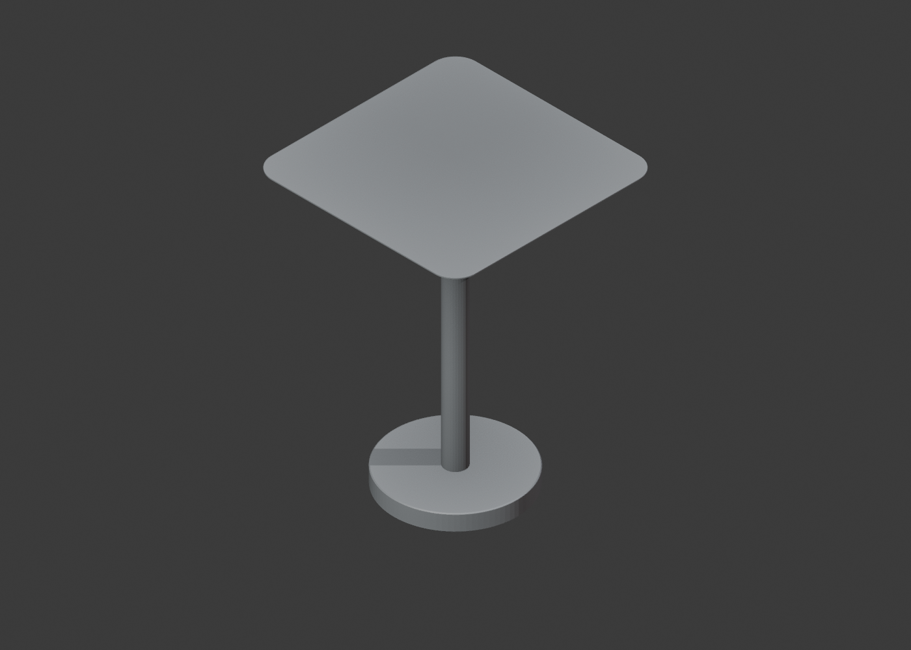

Furniture Plan

Black line = drawing representation from the exact Gessi 54294 official native DWG. The official RODA catalogue confirms the exact 500 x 500 x 670 mm model, but native 2D/3D files require reserved-area login and were not acquired; no blue line is shown.

基于原始高模几何生成的简化图纸表达。三组件：3 mm 圆角桌面、Ø50 立柱、Ø300×40 石材底座。Plan 遮挡隐藏底座和立柱。
Semantic auditLatest semantic contact sheetPlan grey Body comparisonFront grey Body comparisonSide grey Body comparison






7a50b87e8f48a7c2bfbaa9f1dabdfca7155fa684b2325c66aa1ae15c8ab0a25c